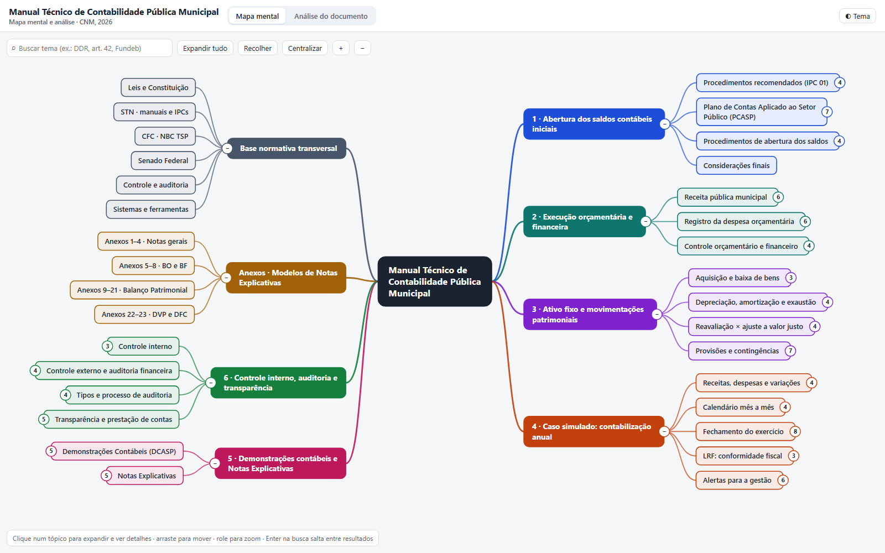

Abertura dos saldos contábeis iniciais
p. 7–46Virada do exercício pelas IPC 01 e 03, as 8 classes do PCASP, o 5º nível de consolidação e os lançamentos de abertura.
Os seis capítulos do manual da Confederação Nacional de Municípios organizados em tópicos clicáveis, cada um com descrição, página de referência e um exemplo prático no Município simulado de São Benedito do Cerrado.

Abrir o mapaOs ramos seguem a ordem do manual, no sentido horário, com as cores usadas no mapa.
Virada do exercício pelas IPC 01 e 03, as 8 classes do PCASP, o 5º nível de consolidação e os lançamentos de abertura.
Receitas, Reforma Tributária (ISS → IBS), estágios da despesa, Restos a Pagar, art. 42 da LRF, PPA, LDO, LOA, RREO e RGF.
Imobilizado, depreciação, reavaliação × valor justo, recuperabilidade, provisões e contingências (NBC TSP 03 (R1)).
Um ano em São Benedito do Cerrado: calendário mensal, fechamento em 10 etapas, DDR por fonte e limites fiscais.
BO, BP, DVP, DFC e BF, com análise, e a estrutura das Notas Explicativas pela NBC TSP 11 (R1).
Controle interno e externo, auditoria financeira (ISSAI 1200), etapas da auditoria, LAI, Portal da Transparência e PNTP.
Modelos de redação e exemplos reais para notas gerais, BO, BF, cada grupo do BP, DVP e DFC.
CF/1988, Lei 4.320/1964, LRF, MCASP, PCASP, IPC, NBC TSP, Resoluções do Senado e sistemas como Siafic, Siconfi e Cauc.
O mapa roda no navegador, sem instalação e sem precisar de internet.
Clique num tópico para abrir os subtópicos. O número no círculo indica quantos há.
O painel lateral mostra a descrição, a página do manual e o exemplo prático do tópico.
Digite “DDR”, “art 42” ou “Fundeb”, sem acento. Enter salta entre os resultados.
Arraste para mover e role para aproximar. “Expandir tudo” mostra o mapa completo.
Os exemplos usam o mesmo Município fictício do capítulo 4 do manual, então os números conversam entre si do primeiro ao último ramo.
Retroescavadeira de R$ 500 mil, valor residual de 10% (R$ 50 mil) e vida útil de 10 anos. Depreciação linear: (500.000 − 50.000) ÷ 10 = R$ 45.000 por ano, ou R$ 3.750 por mês:
D: VPD de depreciação C: (−) Depreciação acumulada – máquinas e equipamentos
MANUAL técnico de contabilidade pública municipal. Coordenação de Elisangela Santos Fernandes, Marcus Vinicius Cunha dos Santos e Sandoval Costa Neto. Brasília, DF: Confederação Nacional de Municípios – CNM, 2026. ISBN 978-85-8418-180-3. Disponível em: https://www.cnm.org.br.
Este mapa mental é material de estudo independente, elaborado a partir da leitura do manual, e não é uma publicação oficial da CNM. A obra permite reprodução desde que citada a fonte e sem fins comerciais (Lei 9.610/1998). Para aplicação prática, consulte sempre o texto integral.
Organizadas pelo papel que tiveram na elaboração: a fonte principal, as fontes conferidas na web, a legislação e as normas citadas nos exemplos e na análise, e a bibliografia do próprio manual, que forma o ramo “Base normativa”.
Estrutura dos ramos, descrições, páginas de referência, dados do caso simulado (Município fictício de São Benedito do Cerrado/BA) e contas contábeis usadas nos lançamentos.
Usadas para confirmar dados atualizados que aparecem nos exemplos.
Dispositivos citados com base no conhecimento técnico de contabilidade pública, para fundamentar os exemplos e os pontos de atenção da análise. Com exceção dos itens do grupo 2, não foram conferidos on-line durante a elaboração. Consulte sempre a versão vigente.
Referências listadas pelo próprio manual, transcritas como publicadas. Formam o ramo “Base normativa transversal” do mapa e sustentam as descrições dos tópicos.